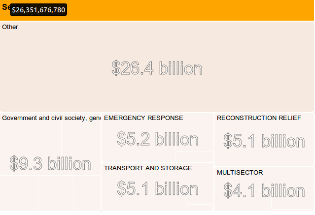

Word Cloud
Most popular words in aid project descriptions for a country.
Embed code:
<iframe src="http://davidrs.github.io/AidDataWidgets/widgets/wordcloud/index.html" width="400" height="400"></iframe>

Sector Explorer Interactive
Allows users to navigate most popular areas of aid investment in a country.
Embed code:
<iframe src="http://davidrs.github.io/AidDataWidgets/widgets/sector-explorer/index.html" width="400" height="400"></iframe>